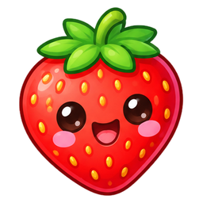
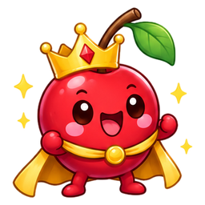
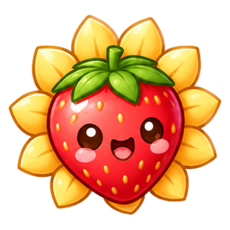
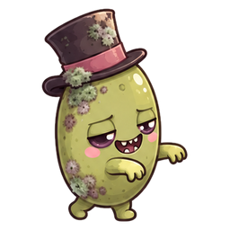
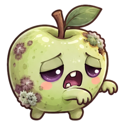

Fruit Pop
Le Verger Enchanté
Bubble shooter kawaii : aide Pépin la cerise à libérer le Verger du Baron Moisi. 24 niveaux, 3 mondes, 3 boss, tirs spéciaux et événements météo.
Jouer ▶


Fruit Kawaii vs
Fruit Zombifié
Défense du verger : plante des fruits kawaii pour stopper l'armée zombifiée du Baron. 8 niveaux, 5 défenseurs, arrosoirs de secours et boss final.
Jouer ▶